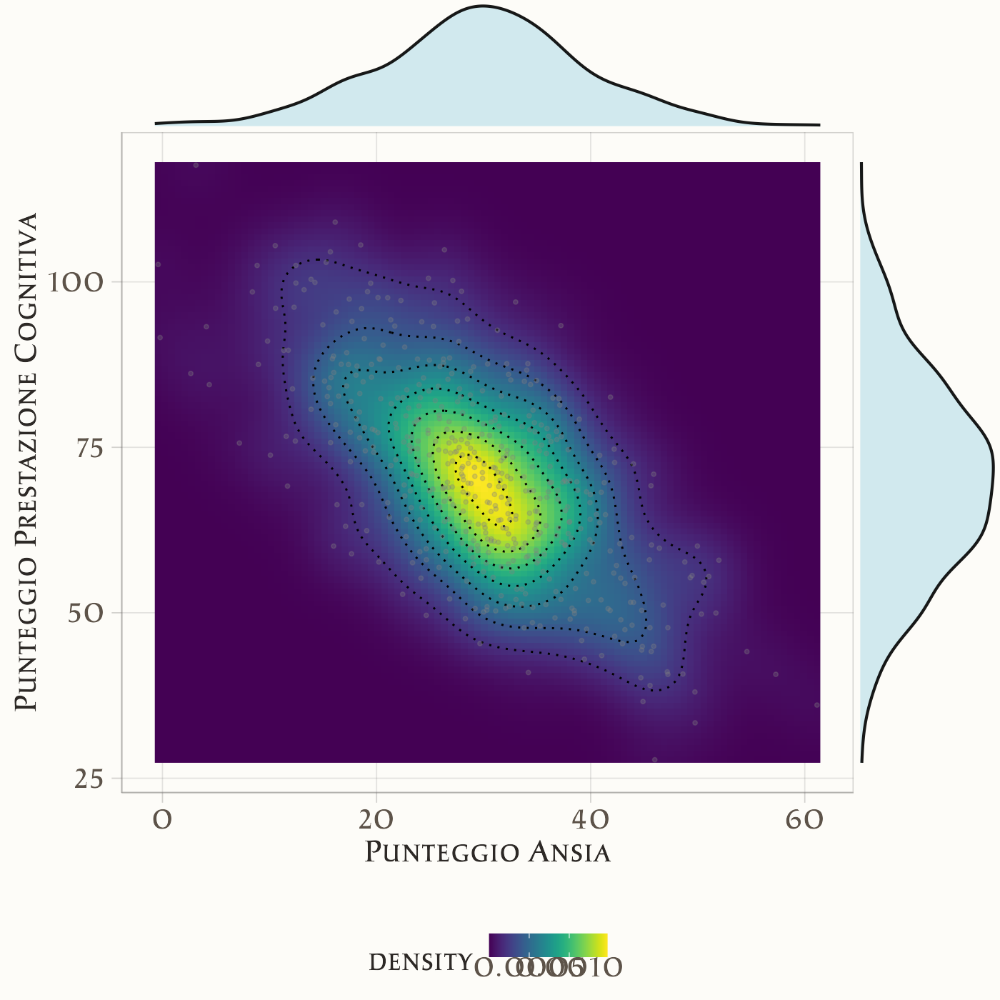

11 Probabilità congiunta
“Probability is expectation founded upon partial knowledge. A perfect acquaintance with all the circumstances affecting the occurrence of an event would change expectation into certainty, and leave neither room nor demand for a theory of probabilities..”
– George Boole, An Investigation of the Laws of Thought (1854)
Introduzione
Fino a questo momento abbiamo considerato il concetto di probabilità associato a singole variabili casuali. Tuttavia, in molte situazioni pratiche e psicologiche, è fondamentale analizzare come due o più variabili casuali interagiscono tra loro. La distribuzione congiunta ci permette di descrivere la probabilità che più variabili aleatorie assumano contemporaneamente specifici valori.
Questo capitolo introduce e approfondisce il concetto di distribuzione congiunta attraverso definizioni, proprietà essenziali e un esempio concreto basato sulla letteratura psicologica.
Panoramica del capitolo
- Definizione di distribuzione congiunta per variabili discrete e continue.
- Le proprietà fondamentali: non-negatività e normalizzazione.
- Come ottenere e interpretare le distribuzioni marginali da una congiunta.
- Il concetto di indipendenza e come verificarla tramite la distribuzione congiunta.
- Estensione al caso continuo, con esempi grafici (mappe termiche) e densità marginali/condizionali.
11.1 Cos’è la distribuzione congiunta?
Quando studiamo due variabili casuali — ad esempio ansia (\(Y\)) e prestazione cognitiva (\(X\)) — non ci interessa solo il loro comportamento individuale, ma anche come si manifestano insieme. La distribuzione congiunta descrive proprio questo: la probabilità che \(X\) e \(Y\) assumano contemporaneamente determinati valori.
- Caso discreto (variabili che possono assumere valori distinti, come categorie o conteggi)::
\[ p(x, y) = P(X = x, Y = y) . \]
- Caso continuo variabili misurate su scale numeriche con molti possibili valori, come punteggi o tempi di reazione):
\[ f(x, y) \] che rappresenta la densità di probabilità congiunta.
Grazie a queste funzioni possiamo rispondere a domande del tipo: Qual è la probabilità che uno studente con ansia elevata ottenga una prestazione insufficiente?
11.2 Proprietà fondamentali
Perché una distribuzione congiunta sia una corretta distribuzione di probabilità, deve rispettare due condizioni di base.
In altre parole:
- tutte le probabilità devono essere positive,
- e la loro somma (o integrale) deve essere uguale a 1.
11.3 Distribuzioni congiunte e inferenza bayesiana
In questo libro ci concentreremo soprattutto sull’inferenza bayesiana, che si fonda proprio sul concetto di distribuzione congiunta. In termini generali, l’inferenza bayesiana mira a descrivere la distribuzione a posteriori dei parametri del modello, cioè la probabilità dei parametri dati i dati osservati.
Questa distribuzione a posteriori deriva dalla combinazione di:
- una distribuzione a priori sui parametri, che esprime le conoscenze (o le ipotesi) disponibili prima di osservare i dati;
- la distribuzione di verosimiglianza, che è una distribuzione congiunta dei dati osservati, condizionata ai parametri.
Se i dati costituiscono un campione casuale indipendente e identicamente distribuito (i.i.d.), allora la verosimiglianza — cioè la distribuzione congiunta delle osservazioni — si ottiene come prodotto delle densità di ogni singola osservazione:
\[ p(y_1, y_2, \dots, y_n \mid \theta) = \prod_{i=1}^n p(y_i \mid \theta). \] Poiché il prodotto di molte densità può rapidamente generare numeri molto piccoli (problema di underflow numerico), nella pratica si lavora quasi sempre con la log-verosimiglianza (o log-densità congiunta):
\[ \log p(y_1, \dots, y_n \mid \theta) = \sum_{i=1}^n \log p(y_i \mid \theta). \] Questo passaggio non cambia la sostanza matematica del problema, ma rende i calcoli più stabili e più facili da gestire al computer.
11.4 Un esempio psicologico: ansia e prestazione
Consideriamo un esempio tratto dalla letteratura psicologica: la relazione tra ansia (Y) e prestazione cognitiva (X) in studenti universitari. La ricerca psicologica indica spesso una relazione negativa tra questi due fattori: livelli elevati di ansia possono associarsi a prestazioni cognitive inferiori (Eysenck et al., 2007).
Supponiamo di aver valutato due variabili discrete in un gruppo di studenti:
- Ansia: bassa, media, alta (codificata come Y = 0, 1, 2);
- Prestazione cognitiva: insufficiente, sufficiente, buona (codificata come X = 0, 1, 2).
La distribuzione congiunta potrebbe essere rappresentata nella seguente tabella (i dati sono ipotetici ma coerenti con la letteratura):
| Ansia Bassa (0) | Ansia Media (1) | Ansia Alta (2) | |
|---|---|---|---|
| Insufficiente (0) | 0.05 | 0.10 | 0.15 |
| Sufficiente (1) | 0.15 | 0.20 | 0.10 |
| Buona (2) | 0.10 | 0.10 | 0.05 |
I valori nella tabella rappresentano stime empiriche delle probabilità congiunte, ovvero le proporzioni osservate di studenti che hanno manifestato una specifica combinazione di livelli delle due variabili. Ad esempio, la cella corrispondente a “Ansia Media” e “Prestazione Sufficiente” indica che il 20% degli studenti nel campione considerato ha un livello medio di ansia ed ha ottenuto prestazioni sufficienti nel compito cognitivo.
Questa tabella ci consente di calcolare probabilità interessanti. Ad esempio, la probabilità che uno studente raggiunga almeno la sufficienza, indipendentemente dall’ansia:
\[ P(X \geq 1) = 0.15 + 0.20 + 0.10 + 0.10 + 0.10 + 0.05 = 0.70 . \]
11.5 Distribuzioni marginali
Dalla distribuzione congiunta possiamo ricavare le distribuzioni marginali delle singole variabili, cioè la probabilità che una variabile assuma un certo valore indipendentemente dall’altra.
Per l’ansia:
- ansia bassa: \[P(Y=0)=0.05+0.15+0.10=0.30 .\]
- ansia media: \[P(Y=1)=0.10+0.20+0.10=0.40 .\]
- ansia alta: \[P(Y=2)=0.15+0.10+0.05=0.30 .\]
Queste distribuzioni ci dicono, ad esempio, che nel campione il 40% degli studenti ha ansia media.
11.6 Indipendenza e dipendenza
Due variabili casuali \(X\) e \(Y\) si dicono indipendenti se la loro distribuzione congiunta si fattorizza nelle rispettive distribuzioni marginali:
\[p(x,y)=p(x)p(y) \quad \text{oppure} \quad f(x,y)=f(x)f(y) .\]
Nel nostro esempio, se ansia e prestazione fossero indipendenti, dovremmo avere:
\[P(X=0,Y=2)=P(X=0)P(Y=2) .\]
In realtà, come suggerisce la letteratura (Eysenck et al., 2007), ansia e prestazione tendono a essere dipendenti: più alta è l’ansia, minore è la probabilità di buone prestazioni.
11.7 Il caso continuo: una mappa termica
Se invece misuriamo ansia e prestazione come variabili continue (es. punteggi su scale numeriche), la distribuzione congiunta è una densità. Possiamo rappresentarla come una mappa termica:
- asse X = ansia,
- asse Y = prestazione,
- colori più caldi = combinazioni più probabili.
Un esempio simulato mostra che la maggior parte degli studenti si concentra intorno a bassa ansia (30) e buona prestazione (70), mentre i punteggi più alti di ansia si associano a prestazioni più basse.

Questa visualizzazione rende immediato vedere la relazione negativa tra le due variabili (Eysenck et al., 2007).
11.7.1 Marginali e condizionali con variabili continue
Quando lavoriamo con variabili continue, non possiamo semplicemente contare le combinazioni come nel caso discreto (ad esempio, lanci di un dado). Invece, misuriamo la probabilità calcolando l’area della regione interessata sulla nostra mappa termica:
- la probabilità che l’ansia sia tra 50 e 55, e la prestazione tra 30 e 50, è rappresentata dall’area della regione corrispondente nella mappa termica;
- gli integrali (strumenti matematici per calcolare aree) sono semplicemente un modo preciso per fare questa operazione.
11.7.1.1 Densità marginale: proiettare la mappa su un asse
La densità marginale descrive come si distribuisce una singola variabile, prescindendo completamente dall’altra. Possiamo immaginare questo processo come la proiezione della mappa termica su uno degli assi, ottenendo così un’ombra o una proiezione dell’intera distribuzione:
- proiettando tutti i valori sull’asse dell’ansia, si ottiene la densità marginale dell’ansia;
- proiettando tutti i valori sull’asse della prestazione, si ottiene la densità marginale della prestazione.
Queste proiezioni rivelano la distribuzione di ciascuna variabile considerata isolatamente. Nella figura a cui si fa riferimento, le distribuzioni marginali sono state elaborate utilizzando in modo indipendente i dati relativi a ciascuna variabile, senza considerare le loro interrelazioni.
Infatti, i colori più caldi nella mappa termica indicano zone con maggiore densità di osservazioni. Quando proiettiamo questi valori su un asse, otteniamo una curva di densità che rappresenta la distribuzione della variabile. Le aree dove la curva raggiunge valori più alti corrispondono ai valori più frequenti della variabile nella popolazione studiata.
11.7.1.2 Densità condizionale: fette della mappa termica
La densità condizionale risponde alla domanda: “Se osservo persone con un determinato punteggio di prestazione cognitiva (ad esempio 40 punti), qual è la distribuzione dell’ansia tra queste persone?”
- Immaginate di prendere una fetta verticale della mappa termica in corrispondenza della prestazione = 40 punti. Questa fetta mostra la distribuzione dell’ansia soltanto tra coloro che hanno esattamente quella prestazione cognitiva.
- Per rendere questa distribuzione coerente, normalizziamo (cioè “aggiustiamo”) la fetta rispetto alla probabilità complessiva della prestazione a quel livello.
Questa fetta verticale con i suoi vari colori (più caldi dove c’è maggiore densità) può essere convertita in una curva di densità che mostra come si distribuisce l’ansia specificamente per le persone con quel determinato livello di prestazione cognitiva. Il processo di normalizzazione assicura che l’area sotto questa curva di densità condizionale sia uguale a 1, consentendo confronti tra diverse condizioni.
11.7.1.3 Perché è importante in psicologia?
Studiare distribuzioni congiunte è cruciale perché
- mette in luce relazioni complesse tra variabili psicologiche (lineari, curvilinee, bimodali, cluster);
- rivela informazioni che andrebbero perse se osservassimo solo le marginali;
- permette di analizzare fenomeni realistici, in cui costrutti come ansia, motivazione o prestazione non agiscono mai isolatamente.
Riflessioni conclusive
La distribuzione congiunta rappresenta uno strumento fondamentale per l’analisi multivariata in psicologia, permettendo di studiare simultaneamente il comportamento di multiple variabili aleatorie e le loro interrelazioni. Questo approccio risulta particolarmente prezioso nella ricerca psicologica, dove i fenomeni oggetto di studio - come l’ansia, la prestazione cognitiva, la motivazione o i tratti di personalità - raramente si manifestano in isolamento, ma piuttosto attraverso complesse reti di influenze reciproche.
I concetti di densità congiunta, marginale e condizionale costituiscono la base per un’analisi rigorosa delle relazioni tra variabili psicologiche continue. Questi strumenti consentono di esplorare come i costrutti psicologici interagiscono e si influenzano reciprocamente, offrendo un quadro analitico per comprendere la complessità dei fenomeni mentali e comportamentali.
Il passaggio concettuale dalle variabili discrete a quelle continue, pur richiedendo l’adozione di strumenti matematici più sofisticati (integrali invece di somme), mantiene intatta la sua intuizione fondamentale. La logica appresa nel caso discreto continua a fornire una solida base interpretativa anche per i fenomeni continui, che meglio rappresentano la realtà della misurazione psicologica.
Questo framework analitico prepara il terreno per la successiva quantificazione delle relazioni tra variabili attraverso indicatori come la covarianza e la correlazione. Questi strumenti, che saranno approfonditi nel prossimo capitolo, permetteranno di misurare sistematicamente la forza e la direzione delle associazioni psicologiche, trasformando le osservazioni qualitative in relazioni quantitative verificabili.
L’approccio attraverso le distribuzioni congiunte non solo fornisce un linguaggio formale per descrivere le relazioni psicologiche, ma stabilisce anche le fondamenta per modelli più avanzati di analisi dei dati, aprendo la strada a una comprensione sempre più sofisticata dei meccanismi che regolano il comportamento umano e i processi mentali.